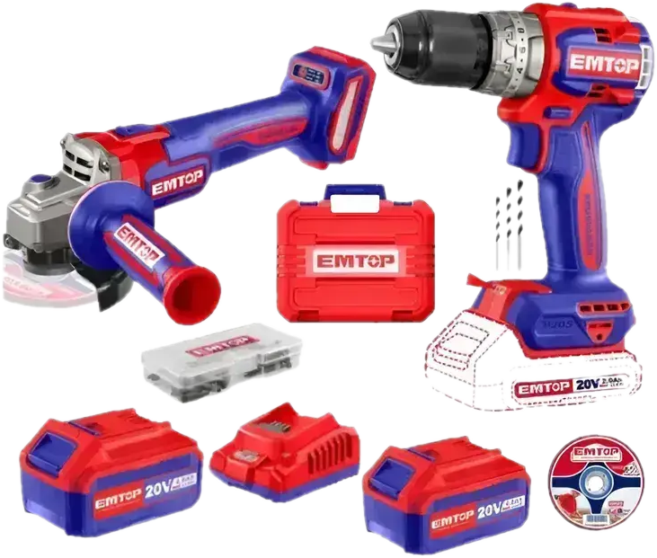

20V
Producto de la semana
Dos máquinas.
Una batería.
Sin cables. Sin vueltas.
EMTOP
PRODUCTO DE LA SEMANA

Taladro + amoladora · brushless
Kit Emtop
20 V
66 NmTaladro percutoratornillador brushless
115 mmAmoladora angularpara corte y desbaste
2 × 4 AhBaterías+ cargador incluido
47Accesorios+ 10 discos + maletín
Kit Emtop 20 V
Consultá
precio
y stock.
11 3182-6166
masherrferreteria.com.ar
CALLE 38 4335 · VILLA LYNCHSAN MARTÍN